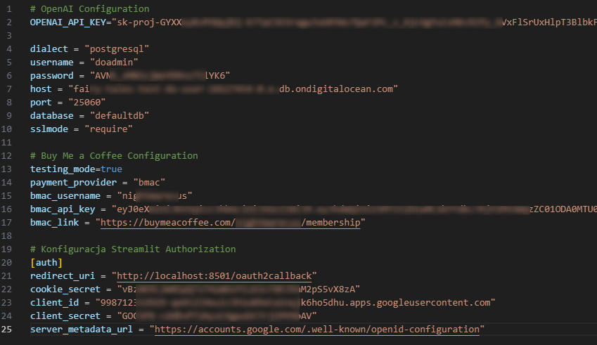
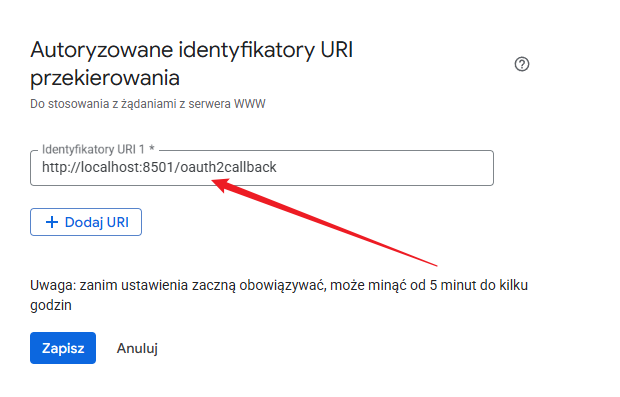

St-paywall - nowa implementacja¶
Aktualizacja bibliotek i konfiguracji¶
Jedna z nowszych wersji Streamlit wprowadza wbudowaną autentykację użytkowników, co znacznie upraszcza proces implementacji st-paywall. Jednak, aby to działało, należy wykonać kilka modyfikacji dotychczasowego kodu. Poniżej znajduje się kompletny przewodnik po nowej konfiguracji.
1. Wymagane biblioteki¶
Zaktualizuj swoje zależności do następujących wersji:
streamlit==1.49.1
st-paywall==1.0.2
authlib==1.6.0
2. Nowa struktura pliku secrets.toml¶
Zaktualizowany format pliku konfiguracyjnego:
# OpenAI Configuration
OPENAI_API_KEY="..."
dialect = "postgresql"
username = "doadmin"
password = "..."
host = "..."
port = "25060"
database = "defaultdb"
sslmode = "require"
# Buy Me a Coffee Configuration
testing_mode=true
payment_provider = "bmac"
bmac_username = "..."
bmac_api_key = "..."
bmac_link = "..."
# Konfiguracja Streamlit Authorization
[auth]
redirect_uri = "http://localhost:8501/oauth2callback"
cookie_secret = "..."
client_id = "..."
client_secret = "..."
server_metadata_url = "https://accounts.google.com/.well-known/openid-configuration"
Ważne
Wartości w pliku secrets.toml należy zastąpić własnymi danymi. Należy zachować strukturę pliku podaną powyżej. Docelowo powinno to wyglądać tak:

Nowymi wartościami są:
server_metadata_url="https://accounts.google.com/.well-known/openid-configuration"- jest to stała wartość, która nie powinna być zmienianaredirect_uri="http://localhost:8501/oauth2callback"- jest to również stała wartość, która nie powinna być zmieniana, jednak zauważ, że treść jest inna niż w poprzednim plikusecrets.tomlcookie_secret="..."- jest to losowy ciąg znaków, jest wymagany do szyfrowania ciasteczek i musi być unikalny dla każdej aplikacji, należy go wygenerować - w tym celu w notebooku Jupyter wykonaj następującą komendę:Następnie skopiuj wynik i wklej go do plikuimport secrets cookie_secret = secrets.token_urlsafe(32) print(cookie_secret)secrets.toml- będzie to Twój nowy, unikalny cookie secret.
3. Konfiguracja Google Cloud¶
Dodaj nowy redirect URI w Google Cloud Console http://localhost:8501/oauth2callback
Ważne
Zauważ, że jest to inna treść niż w poprzednim pliku secrets.toml

4. Nowa implementacja w kodzie¶
W miejscu gdzie wcześniej było:¶
try:
add_auth(
required=False,
login_sidebar=True,
login_button_text="Zaloguj się przez Google",
)
except KeyError:
pass
należy zastąpić na:¶
with st.sidebar:
if not st.user.is_logged_in:
st.button("Zaloguj się", on_click=st.login, use_container_width=True)
else:
st.button("Wyloguj się", on_click=st.logout, use_container_width=True)
if st.user.is_logged_in:
try:
add_auth(
required=False,
use_sidebar=True,
subscription_button_text="Zostań PREMIUM",
)
except KeyError:
pass
5. Zmiana sposobu pobierania danych użytkownika¶
W nowej implementacji pobieramy dane użytkownika w następujący sposób:
email = st.user.email
if st.user.is_logged_in:
# Kod aplikacji dla zalogowanych użytkowników
pass
Streamlit.
Stary sposób (już nieaktualny) pobierania danych użytkownika:
# NIE UŻYWAJ - przestarzałe
email = st.session_state['email']
6. Struktura głównej aplikacji¶
Poniżej przedstawiony jest zarys głównych zmian w strukturze aplikacji. To nie jest kompletna aplikacja, a jedynie przykład pokazujący wprowadzone modyfikacje, gotowy plik znajdziesz pod przykładem:
import streamlit as st
from st_paywall import add_auth
# Konfiguracja strony
st.set_page_config(page_title="Twoja Aplikacja", layout="wide")
# Obsługa autentykacji w sidebarze
with st.sidebar:
if not st.user.is_logged_in:
st.button("Zaloguj się", on_click=st.login, use_container_width=True)
else:
st.button("Wyloguj się", on_click=st.logout, use_container_width=True)
# Główna logika aplikacji
if st.user.is_logged_in:
try:
add_auth(
required=False,
use_sidebar=True,
subscription_button_text="Zostań PREMIUM",
)
except KeyError:
pass
# Pobierz email użytkownika
email = st.user.email
# Tutaj umieść kod swojej aplikacji
st.title("Witaj w aplikacji!")
st.write(f"Zalogowany jako: {email}")
else:
st.title("Musisz się zalogować")
st.write("Kliknij 'Zaloguj się' w panelu bocznym, aby kontynuować.")
Pobierz gotowy plik: app_v4.py
Ważne
Plik app_v4.py jest gotowym plikiem, który możesz użyć do uruchomienia aplikacji. Jednak, aby uruchomić aplikację, należy pamiętać, że należy również uzupełnić wartości w pliku secrets.toml oraz zaktualizować redirect URI w Google Cloud Console.